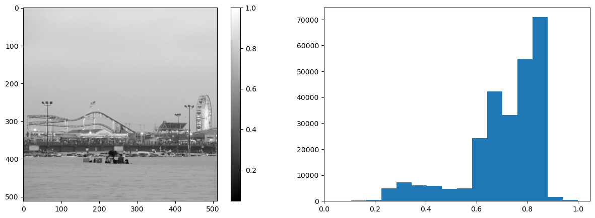
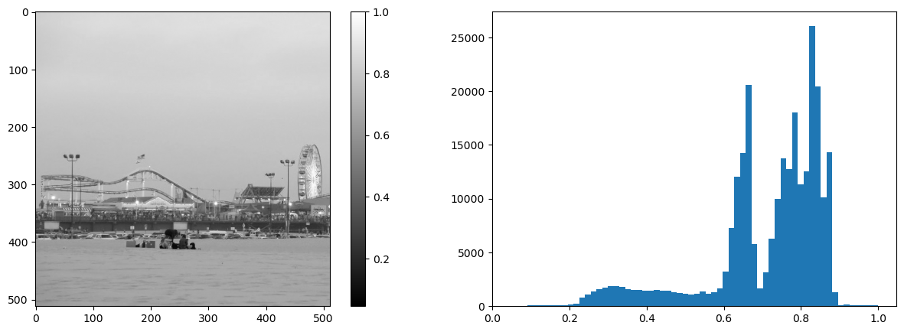
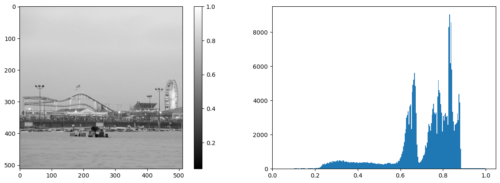
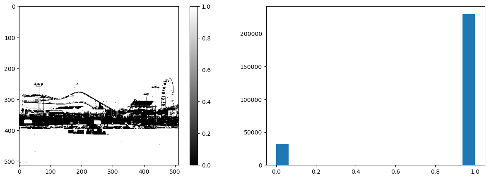
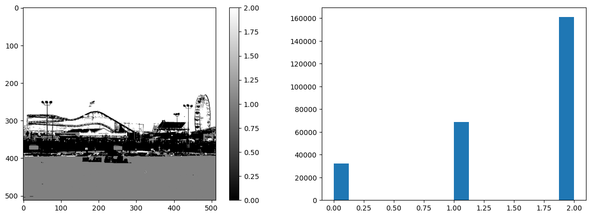
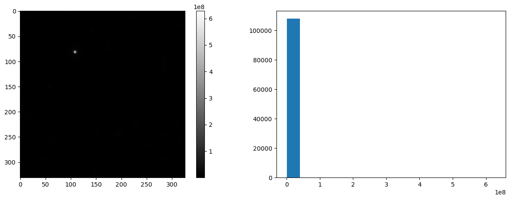
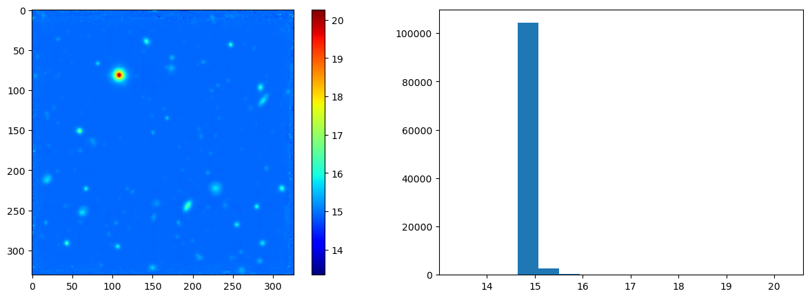
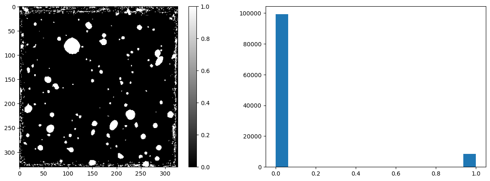

Analyser un histogramme#
import skimage.io as io
import skimage.color as clr
import matplotlib.pyplot as plt
import numpy as np
def affichage(f, cmap="gray", bins=16):
"""Affichage de l'image et de son histogramme"""
# Création de la figure avec deux graphes
fig, axs = plt.subplots(1,2, figsize=(15,5))
# Axe 1 : image et sa colorbar
img = axs[0].imshow(f, cmap=cmap)
fig.colorbar(img, ax=axs[0])
# Axe 2 : histogramme
axs[1].hist(f.ravel(), bins)
# Affichage de la figure
plt.show()
Santa Monica#
# Chargement de l'image
f = io.imread("_static/santamonica.jpg")
# Conversion en niveaux de gris
f = clr.rgb2gray(f)
# Image originale
affichage(f)

# Image originale
affichage(f, bins=64)

# Image originale
affichage(f, bins=256)

# Image seuillée
g = 1*(f>.55)
affichage(g)

# Image avec deux seuils
g = 1*(f>.55) + 1*(f>.7)
affichage(g, "gray")

HDFS#
# Chargement
f = io.imread("_static/hdfs.tiff")
# Information sur l'image
print(f"Dimension de l'image : {f.shape}")
print(f"Type de données : {f.dtype}")
print(f"Valeurs extrêmes des intensités : {f.min()} -> {f.max()}")
Dimension de l'image : (331, 326)
Type de données : uint32
Valeurs extrêmes des intensités : 625722 -> 628454834
# Image originale
affichage(f, "gray")

# Transformation de l'histogramme
g = np.log(f)
affichage(g, "gray")

# Transformation de l'histogramme (palette "jet")
affichage(g, "jet")

# Seuillage
g = 1*(f>3.2e6)
affichage(g, "gray")
